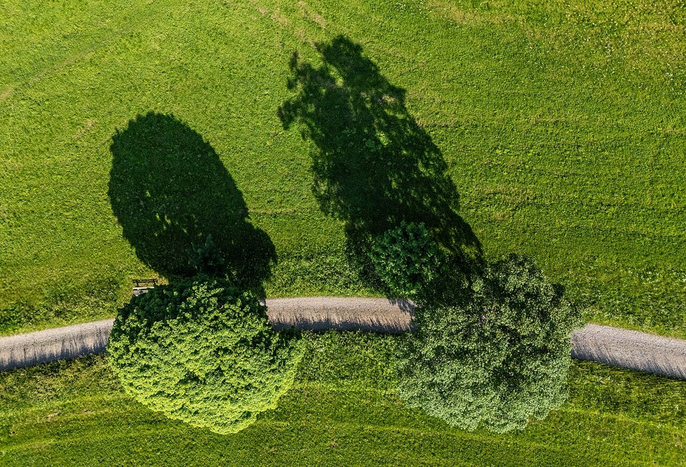

Descubriendo la Magia del Bosque Negro: Una Guía para Viajeros

El Bosque Negro, o Schwarzwald en alemán, es una de las regiones más fascinantes de Alemania. Con sus densos bosques, pintorescos pueblos y tradiciones arraigadas, este destino es perfecto para aquellos que buscan naturaleza, cultura y gastronomía auténtica. En este artículo, te guiaremos a través de los detalles esenciales para planificar tu viaje al corazón del Bosque Negro.
Cómo Llegar al Bosque Negro
El Bosque Negro se encuentra en el suroeste de Alemania, en el estado de Baden-Wurtemberg. Si viajas desde España, la forma más conveniente es volar a los aeropuertos cercanos como Stuttgart o Frankfurt. Desde allí, puedes alquilar un coche o tomar un tren para adentrarte en la región. El transporte público es eficiente, pero tener un coche te permitirá explorar áreas más remotas y disfrutar de los paisajes al ritmo que prefieras.
Cuándo Visitar el Bosque Negro
El Bosque Negro es un destino para todo el año, pero cada estación ofrece experiencias únicas. En primavera y verano, los campos florecen y es ideal para hacer senderismo o ciclismo. El otoño es mágico, con los árboles mostrando tonos dorados y rojizos. En invierno, la región se convierte en un paraíso para los amantes de los deportes de nieve, especialmente en áreas como Feldberg. Elige la época que mejor se adapte a tus intereses.
Los 5 Mejores Lugares para Visitar
1. Titisee: Este lago glacial es perfecto para relajarse o practicar deportes acuáticos. El pueblo cercano, con el mismo nombre, es encantador y cuenta con tiendas y restaurantes tradicionales.
2. Triber: Conocida por sus cascadas espectaculares, Triber es un lugar imprescindible para los amantes de la naturaleza.
3. Freibur: Esta ciudad universitaria es el corazón cultural de la región, con una catedral impresionante y un ambiente vibrante.
4. Gernsbach: Este pueblo medieval es ideal para aquellos que buscan una experiencia más auténtica y menos turística.
5. La Selva Negra en Tren: La línea ferroviaria que atraviesa el Bosque Negro ofrece vistas panorámicas inolvidables.
Qué Comer en el Bosque Negro
La gastronomía del Bosque Negro es sencilla pero deliciosa. No te pierdas el famoso Schwarzwälder Kirschtorte (tarta de cereza del Bosque Negro), un postre que ha ganado fama internacional. Además, prueba platos tradicionales como el Spätzle (pasta típica) o el Schäufele (carne de cerdo asada). Para acompañar, disfruta de un vaso de vino local o de una cerveza artesanal. En los mercados locales, encontrarás productos frescos como miel, quesos y embutidos.
Consejos Prácticos
Es recomendable llevar ropa cómoda y adecuada para el clima, especialmente si planeas hacer actividades al aire libre. Si viajas en invierno, no olvides equiparte para la nieve. Para los amantes de la fotografía, las primeras horas de la mañana son ideales para capturar la belleza del paisaje. Finalmente, respeta la naturaleza y sigue las normas locales para preservar este tesoro natural.
Haiktec
- 7 Cuentos Mágicos para Dormir a Tus Pequeños: Aventuras Cortas para Niños de 3 a 8 Años
- Planificador Profesional de Mudanza y Renovación: Presupuesto y Cronograma
- 7 Pasos Clave para un Huerto Autosuficiente en Casa
Text mit KI erstellt und automatisch geprueft.